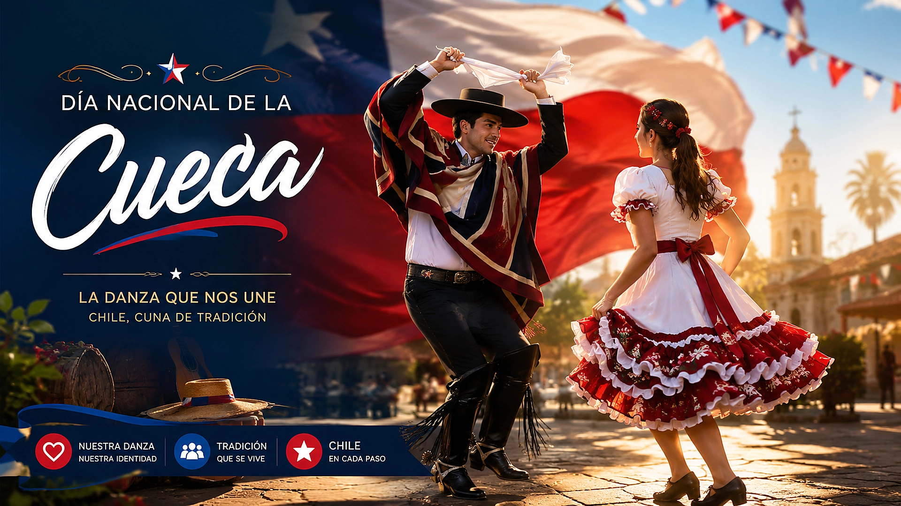

17 de Septiembre 2026
Sobre el Día Nacional de la Cueca
El 17 de septiembre se celebra el Día Nacional de la Cueca, reconociéndola como baile nacional de Chile, condición que ostenta desde el 18 de septiembre de 1979 según el decreto N°23. La fecha rinde homenaje al baile folclórico chileno por excelencia y a su profundo significado histórico.
La cueca es un baile con raíces andaluzas, afroamericanas y amerindias, que se baila aproximadamente desde 1824. Es un baile de conquista: el hombre intenta seducir a la mujer con sus movimientos y el pañuelo, mientras ella coquetea y lo rechaza, según la tradición. Existen distintos estilos, como la cueca brava, la cueca chora y la cueca nortina, cada una con sus propias características y ritmos.
La cueca en septiembre
En septiembre las fondas y ramadas se llenan de banderas, empanadas, mote con huesillos y, por supuesto, de pie de cueca. Los "pie de cueca" son los grupos que se forman alrededor de la pareja para cantar, palmotear y animar el baile, en medio de las celebraciones de las Fiestas Patrias.
El pañuelo es el compañero inseparable de la cueca: se lleva en la mano derecha, se agita durante el baile y jamás se suelta. Es tradición que, al finalizar, la pareja lo guarde como recuerdo del momento compartido.
Activación Especial
Con motivo de esta efeméride, la estación CE4JWI realizará una activación especial con QSL conmemorativa. El contacto podrá realizarse por los siguientes modos:
Modos de Activación

- APRS: Responder al llamado CQ CUECA en la frecuencia de 144.390 MHz
- DMR: Talkgroup TG 73040 de la red ADN Systems
QSL
Al finalizar tu contacto, la QSL conmemorativa se genera automáticamente. Puedes consultarla en la sección de QSL del sitio web o recibir el enlace por APRS.